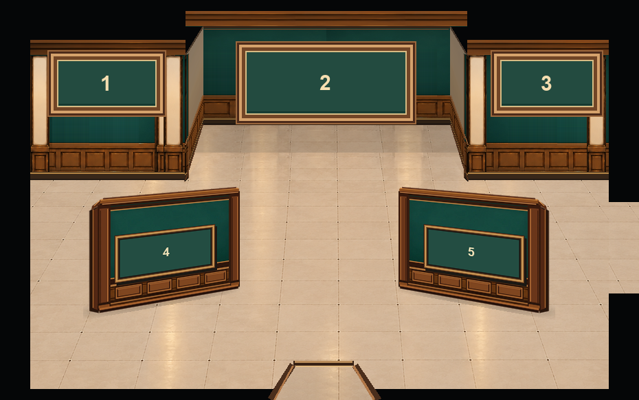
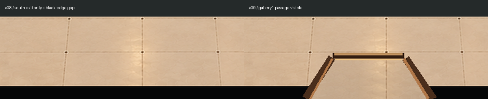

とっておき美術館 / 建築背景・展示枠確認
展示室3｜展示室1への通路と額縁サイズ v09
凸型の構造・左右側壁の木材と柱の立体感はv08を維持。下中央の通路と中央額縁②だけを見直しています。

① 展示室1へつながる下中央の通路
今までは黒枠が途中で切れているだけでした。今回は木製の縁と床続きの開口に変更し、通路を視認できるようにしています。

左：v08／右：v09。緑のカーペットは使っていません。
② 真ん中の額縁サイズ
- 左①：162 × 86px（維持）
- 中央②：252 × 110px → 196 × 104px（提案）
- 右③：153 × 86px（維持）
中央は左①より幅約21%、高さ約21%大きくしています。①と②の縦横比をほぼ揃え、作品画像を横方向に伸ばす配置を避けます。実際の作品表示でも縦横比を維持し、枠の中に収める必要があります。
監修用画像です。奥壁の3枠は比較用の仮表示、独立展示壁④⑤の承認位置は維持しています。正式なroom.json・ゲーム本体の素材や通行判定は変更していません。ユーザー確認後に採用値を反映します。